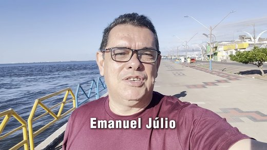

00:00:14.300
Emanuel Júlio, identificado pelo letreiro do vídeo, fala à câmera no calçadão de guarda-corpo azul e amarelo, com o rio atrás.
Orla de Santarém, Santarém (PA) · confirmado
O apresentador se identifica e abre o passeio sobre a pesca artesanal na orla.
Transcrição · 00:00:09 | 00:00:17
Turismo Aqui — quadro de vídeo publicado no YouTube